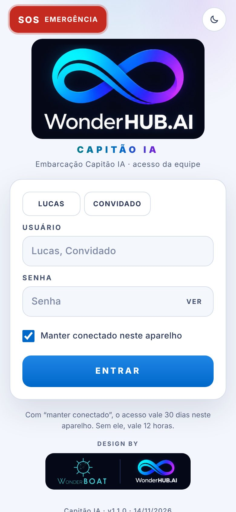
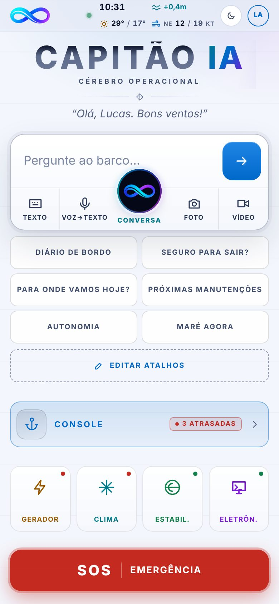
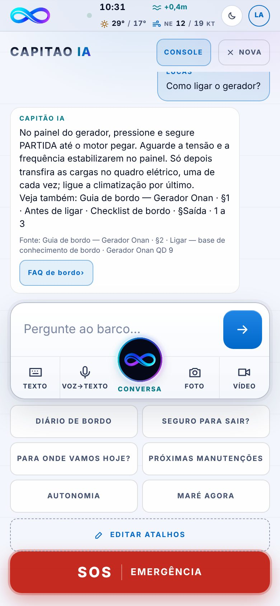
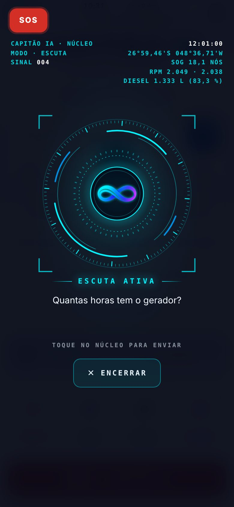
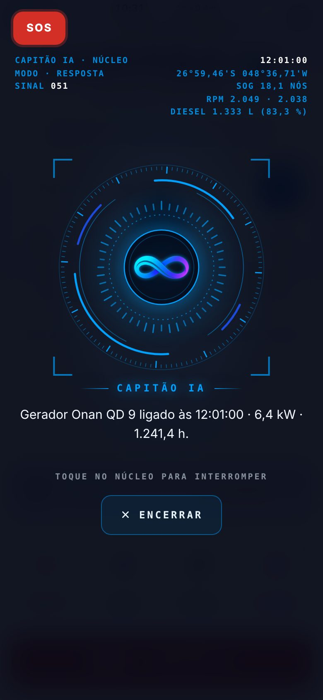
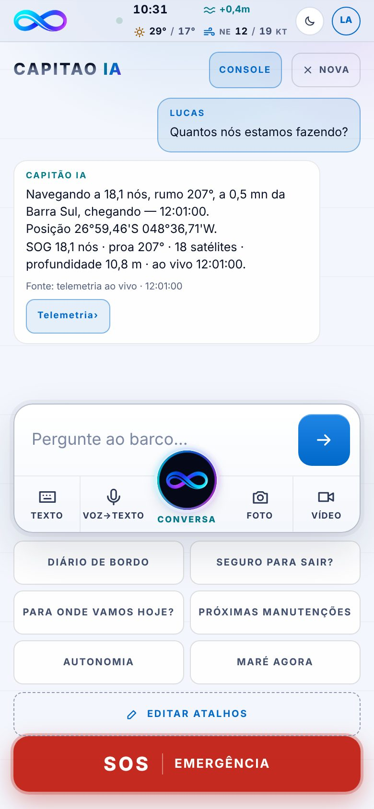
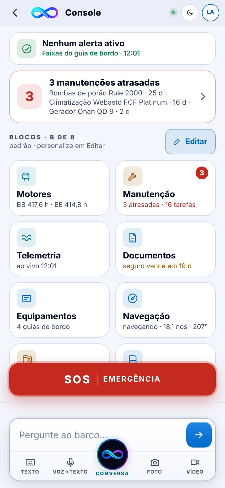
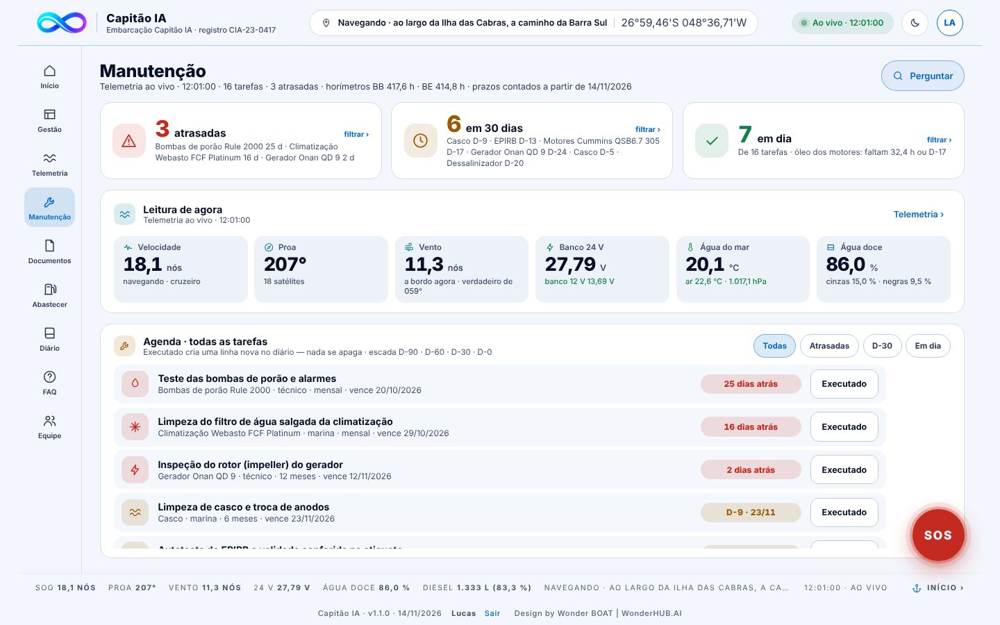
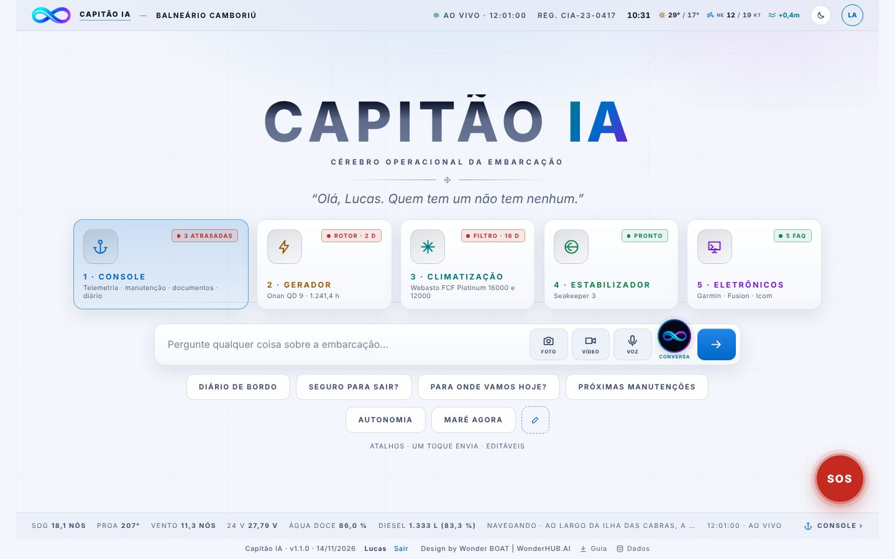

O cérebro operacional da embarcação: você pergunta e ele responde com número, hora e fonte.
A rota de Balneário Camboriú roda num laço de 150 s, a partir das 07:00 (America/Sao_Paulo). Todas as telas, o chat e a conversa leem o mesmo instante, com número e hora. O SOS fica fora do laço: só o nome da embarcação e os protocolos, com a posição do GPS do aparelho ou LEIA NO PLOTTER. Tempo e maré vêm do Open-Meteo.
Texto, voz ou foto. Cada resposta traz a fonte.
Telemetria, manutenção, documentos, abastecimento, diário e equipe.
Botão SOS em todas as telas — abre sem internet e sem senha.

Login no celular (tema claro).
O endereço detecta sozinho: celular abre o app, computador ou tablet abre a web. Para fixar: ?v=app ou ?v=web no fim do endereço; ?v=auto volta a detectar; ?v=lista mostra todas as telas.

Início do app: saudação, chat, atalhos, console, equipamentos e SOS.

"Como ligar o gerador?" — trecho do guia de bordo e a fonte.
Seis perguntas prontas com um toque: DIÁRIO DE BORDO · SEGURO PARA SAIR? · PARA ONDE VAMOS HOJE? · PRÓXIMAS MANUTENÇÕES · AUTONOMIA · MARÉ AGORA. EDITAR ATALHOS: troque, crie e reordene (até 8).
O chat só grava com o comando: "Registre no diário: saída com 4 pessoas". Pergunta nunca vira registro.
"É seguro sair hoje?" · "Quantos nós estamos fazendo?" · "Quanto falta para chegar?" · "Próximas manutenções" · "Autonomia" · "Quais as tendências?" · "Checklist de saída" · "Canal 16". Aviso pedido: "me avise se o motor passar de 90 graus" (só na tela, nunca crítico). Foto de etiqueta ou nota fiscal também vale: não sai do aparelho e vira uma linha A CONFERIR.

Ouvindo (ciano): o núcleo respira; a legenda mostra o que entendeu.

Falando (azul): o espectro segue a voz; a legenda mostra a frase dita.
Voz a 1,15x, só a 1ª linha; o resto fica na tela. Com a IA ativada, o núcleo fica pensando até ela responder. Emergência é lida inteira e o painel mostra só LEIA NO PLOTTER.
| Selo ou estado | Quando aparece |
|---|---|
| AO VIVO · 12:01:00 | Leitura do instante, com a hora e a origem; a tela anda sozinha. |
| ÚLTIMA LEITURA | Sem leitura nova: vale a última salva, com o dia e a hora. |
| AVISO | Uma leitura saiu da faixa do guia de bordo. Só na tela: nunca abre o SOS, nunca fala nem grava sozinho. |
| A CONFERIR A CONFIRMAR | Entrou por foto, upload ou nota — aguarda conferência. |
| PRONTO | FAQ com passo a passo do guia de bordo. |
| PENDENTE | Convite de equipe aguardando confirmação. |
| ATRASADA · D-17 | Prazo da manutenção: atrasada, ou faltam N dias (escada D-90 · D-60 · D-30 · D-0). |
| FORA DAS FONTES | "Isso não está nas fontes de bordo": o app diz o que não achou e oferece registrar a pendência ou receber uma foto. |

"Quantos nós estamos fazendo?": número, hora e fonte.
Vale esta ordem: manual oficial › registro oficial › laudo › diário › foto › nota informal.
Todo número de sensor vem com a hora: AO VIVO · hh:mm:ss no cabeçalho e na faixa de baixo. Sem leitura nova, a tela diz ÚLTIMA LEITURA com o dia e a hora. Motor desligado mostra a última leitura com motor ligado, nunca zero.

Console do app: 8 blocos que você reorganiza.
Motores · Manutenção · Telemetria · Documentos · Equipamentos · Navegação · Abastecer · Diário. O lápis abre a edição: mover, trocar ícone, trocar por outro do banco, restaurar. Fica salvo só neste aparelho.
Na Manutenção, Executado marca a tarefa feita e cria uma linha nova no diário com a data e quem marcou. Errou? Desfazer volta a tarefa para a agenda — e também vira linha nova. Nada se apaga.
O diário só cresce: quem, quando e fonte em cada linha; correção é uma linha nova. Nos checklists guiados (saída, chegada, abastecimento, fundeio) o app marca ✓ o que o quadro de bordo confirma e CONCLUIR grava uma linha.

Manutenção na web: atrasadas, D-30 e em dia, leitura de agora com hora e a agenda com Executado.

Início na web: 5 botões fixos (Console, Gerador, Climatização, Estabilizador, Eletrônicos), chat, atalhos, faixa de leitura e SOS.
Início · Gestão · Telemetria · Manutenção · Documentos · Abastecer · Diário · FAQ · Equipe. Cada cartão termina com a linha Fonte:.
Embaixo de toda tela: velocidade, proa, vento, bateria 24 V, água doce, diesel, estado e a hora com AO VIVO — e INÍCIO ›.
Hora do barco, máxima/mínima de hoje, vento e rajada em nós (≋ NE 12/19 KT) e maré agora na posição de referência (Balneário Camboriú); no celular, em duas linhas. Tocar abre o windy.com. A maré é modelo, não a tábua da Marinha.
Sol/lua ao lado do avatar troca claro e escuro em todas as telas. O SOS do celular fica sempre escuro.
| O que aconteceu | O que fazer |
|---|---|
| Não consigo entrar | Confira o nome e a senha com o proprietário. Muitas tentativas travam por alguns segundos — espere a contagem. |
| "O navegador está bloqueando os dados" | Saia da navegação anônima ou permita dados do site. O login e o diário ficam no navegador. |
| A resposta diz que não está nas fontes de bordo | É honestidade: o app não achou a informação. Toque em Registrar pendência ou mande foto da etiqueta. |
| O microfone não liga | Use Chrome, Edge ou Safari e permita o microfone. No Firefox a voz não funciona — digite. |
| Sem internet | Depois da primeira visita tudo abre offline, inclusive o SOS. Clima e maré mostram a última leitura salva do dia, com a hora; sem nenhuma, "—" até a rede voltar. |
| Meus atalhos ou o diário sumiram | Eles ficam no navegador deste aparelho. Limpar os dados do navegador apaga; outro aparelho tem os seus. |
| A tela ainda mostra a versão antiga | Feche e abra o app de novo (ou recarregue a página). A versão aparece no rodapé. |
| A tela está pequena no celular deitado | Deitado, a tela fica em tamanho real e rola; um SOS flutuante aparece no canto. |
Atalhos, diário e marcas ficam só neste aparelho. Antes de trocar de celular, o link Dados no rodapé baixa uma cópia; no novo aparelho, restaurar só soma ao que já existe — o que foi desfeito não volta.
No app: botão vermelho SOS
em todas as telas · sem internet · sem senha
Só em perigo grave e iminente. Fale devagar e repita até ter resposta:
Urgência sem perigo de vida: PAN-PAN, PAN-PAN, PAN-PAN no mesmo formato. Rádio com DSC: o botão DISTRESS envia o alerta com o MMSI do rádio de bordo (etiqueta / Licença de Estação); depois, a chamada por voz no 16.
Desligue motores e gerador e corte a ventilação do motor. Sistema fixo parado e fogo no motor: disparo manual. Depois da descarga, não abra o acesso ao motor: espere o tempo da etiqueta do sistema e o motor esfriar. Fogo que não apaga: MAYDAY no canal 16.
Só em perigo grave e iminente, depois do MAYDAY (ou sem rádio): acione conforme a etiqueta, antena para cima, céu aberto; leve-o para a balsa ou deixe-o flutuando preso por um cabo e não desligue até o resgate.
Modelo, validade e acionamento: veja a etiqueta do equipamento.
Fonte: Protocolo de emergência — procedimento padrão (Google Drive › Capitão IA v2 › 07 Protocolos de emergência). Canal 16: padrão internacional de socorro. MMSI do rádio de bordo (etiqueta / Licença de Estação); indicativo: o da Licença de Estação (no rádio). A posição vem do GPS do aparelho (botão do SOS) ou do plotter. Confirme tudo com o protocolo de bordo.